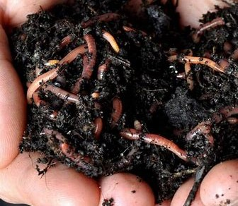

Producimos humus de lombriz, abono natural para enriquecer el suelo.
Ofrecemos lombrices para compostaje, ideales para proyectos ecológicos caseros.
Brindamos asesoría profesional para la creación de lombricultivos sostenibles.
Ofrecemos talleres sobre compostaje para principiantes y expertos en lombricultura.
Ayudamos a gestionar residuos orgánicos transformándolos en recursos valiosos.
 Volver a inicio